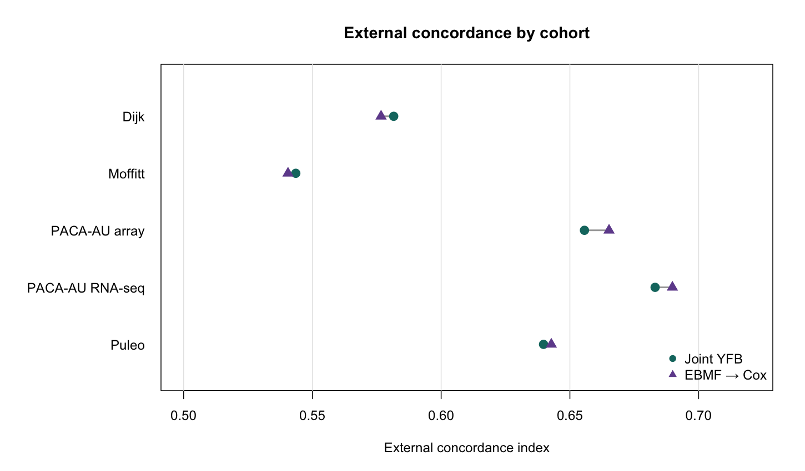
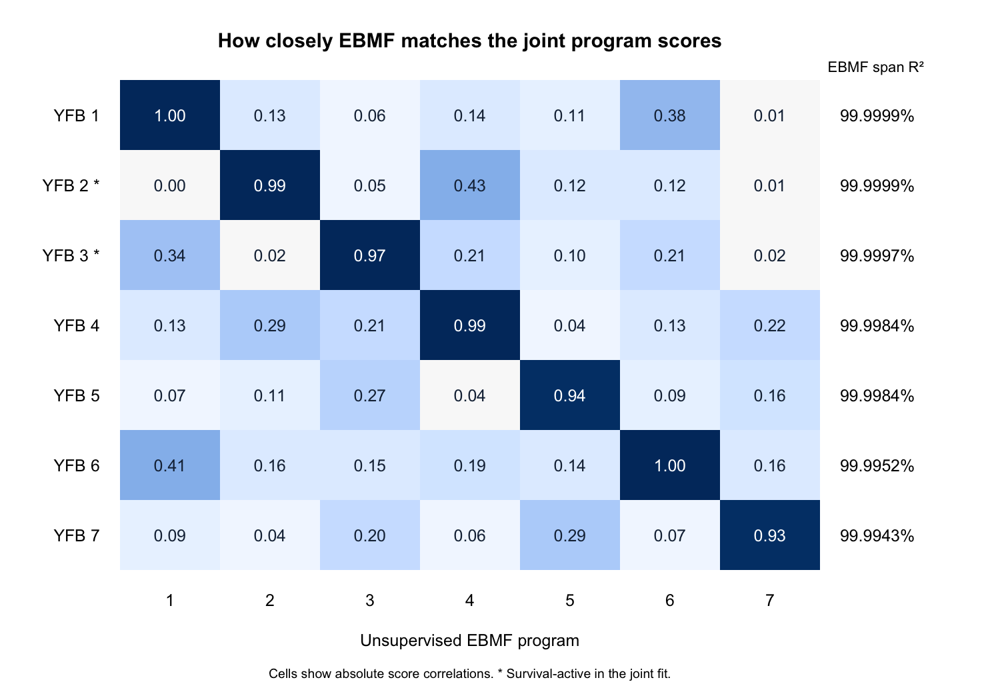
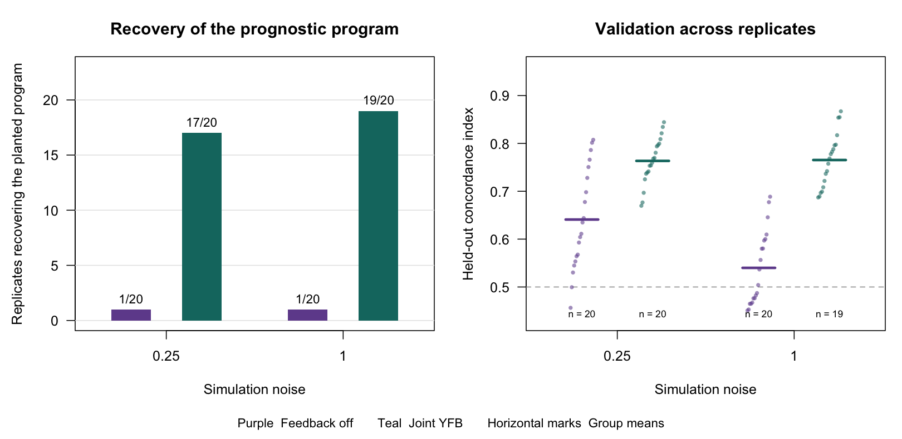
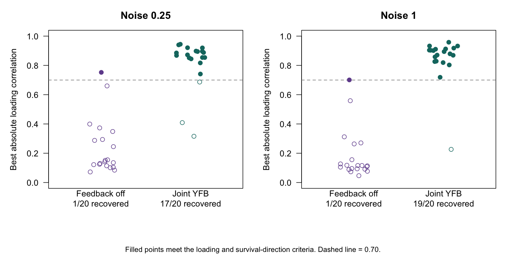
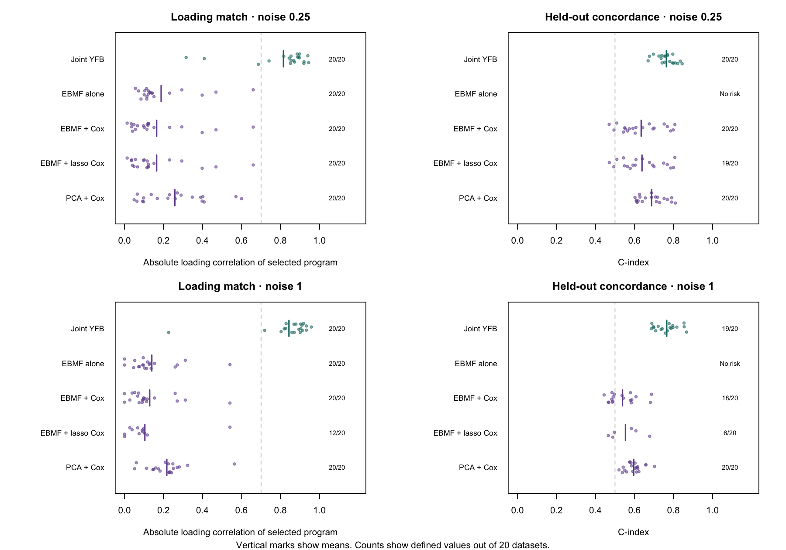

14 November 6, 2026
Working chapter for the week of November 2–6. Sections are added as the work is done.
14.1 Potential Topics
- Rashid Lab Meeting Update (November 5th, 2026) (planned)
- Executive Summary
- Key Issues Resolved
- Attempts to resolve model supervision issues
- Open Items and Questions
14.2 Rashid Lab Meeting Update (November 5th, 2026)
To be filled in.
14.3 Joint YFB on pooled PDAC
The October canonical YFB fit used survival feedback in the gene-weight updates (w_S = 1) and retained two survival-active programs. We compared it with rank-7 unsupervised EBMF on the same 2,064 genes from 273 pooled TCGA and CPTAC patients. We used EBMF alone to compare programs, and EBMF followed by Cox to compare prediction.
A fresh replay of the October code (be57fe9) reproduced the archived loadings, coefficients, and external risk scores exactly. It converged in 244 iterations. With the same historical preprocessing and gene set, the current fitter reached the 300-iteration cap. It retained nonzero coefficients (programs 2 and 3 had means +0.333 and −0.206) and averaged external C of 0.620. Applying only the later Gaussian log-normalizer correction (31db892) to the October code reproduced the current replay’s loadings, coefficients, and monitored objective exactly. The correction changed when the relative-objective stopping rule was satisfied. The comparison below uses the archived October fit.

Across the five external cohorts, mean C was 0.621 for joint YFB and 0.623 for EBMF followed by Cox. The paired difference was −0.002 (95% bootstrap interval −0.012 to +0.006). We checked that the archived survival times and event indicators matched in order and used the saved risk directions. The bootstrap resampled rows within each cohort and weighted cohorts equally. Its interval is conditional on these trained models and assumes independence across cohorts. The saved records do not contain patient identifiers for checking overlap across cohorts.

| Joint program | Cox coefficient (posterior SD) | Best EBMF score correlation, absolute | EBMF span R² | Exploratory annotation of risk-associated genes |
|---|---|---|---|---|
| 2 | +0.350 (0.086) | 0.993 | 99.9999% | DeSurv basal-like tumor signature, 39 of the top 100 genes |
| 3 | −0.185 (0.075) | 0.975 | 99.9997% | Bailey squamous signature, 12 of the top 100 genes |
The signed gene weights also closely match the corresponding EBMF programs (Pearson correlations 0.991 and 0.976 for programs 2 and 3).
The genes below are ordered by loading multiplied by the sign of the Cox coefficient. For program 3, this ranks the negative loadings toward higher predicted risk.
| Program | Top eight genes toward higher predicted risk |
|---|---|
| 2 | SLC16A3, ITGA3, LDHA, SLC2A1, ALDOA, PGK1, P4HA1, PFKP |
| 3 | NCAPD2, MT2A, RPL17, EEF1D, PEG10, ANGPTL4, MT1X, CAV1 |
Program 2’s basal-like signature includes prominent glycolysis-associated weights. Program 3’s risk-associated end overlaps the Bailey squamous signature. Both overlaps passed an exploratory Benjamini–Hochberg adjustment across nine signatures and two programs, with the 2,064 training genes as background. These annotations require independent validation. The fitted shared point-Laplace prior put approximately \(5.7 \times 10^{-7}\) mass on the spike. The two active labels use the posterior mean-to-SD rule, so they give no evidence that the fitted spike pruned the other coefficients.
Interpretation. Joint YFB learned survival-associated programs with similar observed discrimination to the two-step model. On these training patients, EBMF already represented almost all the score variation in both survival-active programs. This fit therefore gives little evidence that joint fitting recovered a low-variance prognostic score outside the EBMF span. The calibrated October simulation provides evidence for that capability under its planted design.
14.3.1 Planted low-variance prognostic program
The calibrated October simulation used 400 training subjects and a strong planted survival coefficient (log-hazard coefficient 3.3). Recovery required an absolute loading correlation of at least 0.7 and the correct survival direction after sign alignment.

| Noise | Maximum planted expression variance share | Recovery, feedback off / joint | Mean validation C, off / joint | Joint converged |
|---|---|---|---|---|
| 0.25 | 0.49% | 1/20 / 17/20 | 0.641 / 0.763 | 19/20 |
| 1.00 | 0.04% | 1/20 / 19/20 | 0.540 / 0.765 | 19/20 |
At noise 1.00, the joint mean C uses 19 defined values. One replicate had undefined validation C. The feedback-off reference is historical YFB with a fitted survival coefficient and no survival feedback into the gene weights. The joint arm also changes initialization and priors. This simulation supports low-variance program recovery under the tested design. The later larger-feature evaluation failed its combined recovery, false-active and convergence gate.

The recovery plot shows one near miss at low noise and a wider gap for the other supervised failures. At high noise, the single missed program had a loading correlation of about 0.23.

In the matched comparator rerun, none of the four comparator methods met its recovery criterion at either noise level. EBMF alone selects its closest loading by correlation with the planted program and has no risk score. The two-step methods select a program by absolute Cox z-statistic and also require the correct survival direction for recovery. At high noise, EBMF followed by lasso Cox had defined concordance in 6 of 20 datasets. Its plotted mean describes those six datasets.
The close PDAC program matches are consistent with weak effective survival feedback. The prediction comparison alone cannot establish that explanation. The existing training-only weight grid found that higher weights can destabilize the fit, so a stronger feedback setting should be evaluated on recovery, false activity and convergence together.
Expression and methylation extension. First verify that the multimodal fitter at M = 1 reproduces the single-modality reference under matched settings. For M = 2, use shared patient scores and separate expression and methylation loadings, feature precisions, and loading priors. The existing implementation sums the modality projections before computing the Cox predictor \(\eta = (\sum_{m=1}^{M} Y^{(m)} F^{(m)})\beta\). Check each block’s contribution to the combined score and validate prediction on patients with matched modalities, using training-only choices for priors and rank.